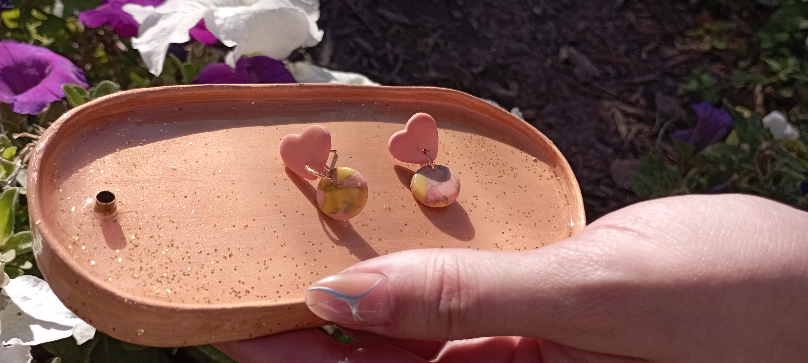

Bienvenidos a nuestra página!
Aquí podrás descubrir la variedad de aritos y accesorios que confeccionamos, los cuales están realizados con arcilla polimérica de gran calidad, utilizando diseños propios y en diferentes estilos de coloración. También tenemos una sección de compras y encargos de diseños únicos a pedido. Que disfrutes de tu visita al sitio!
Para experimentar cada día la espiritualidad, necesitamos recordar que somos seres espirituales pasando algo de tiempo en un cuerpo humano.